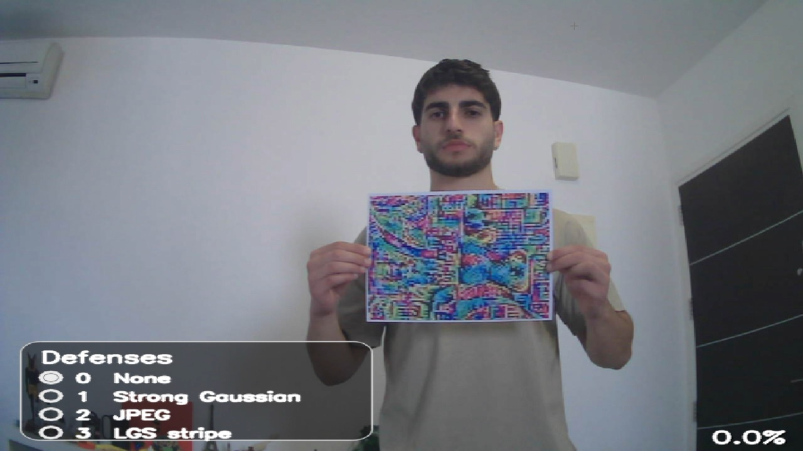
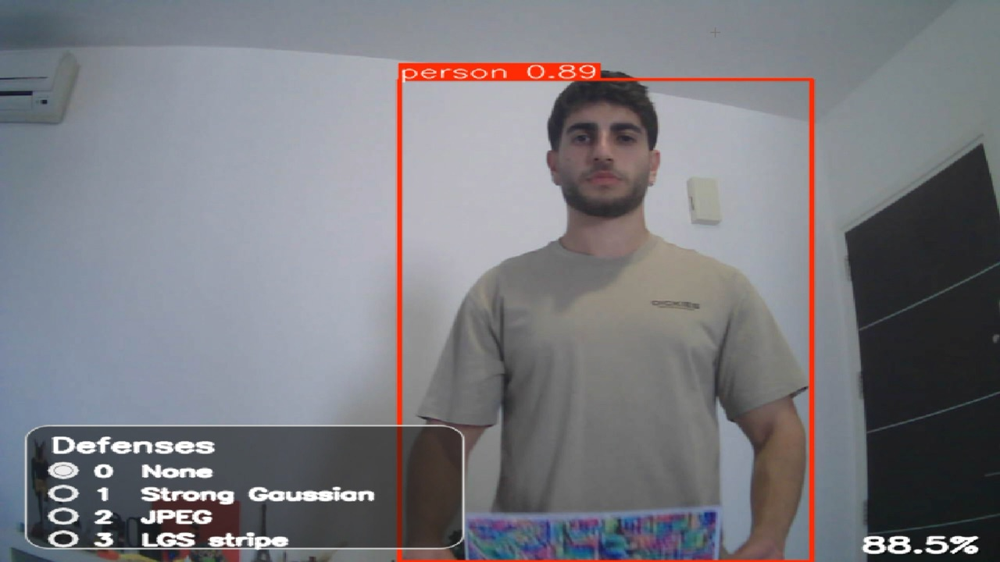
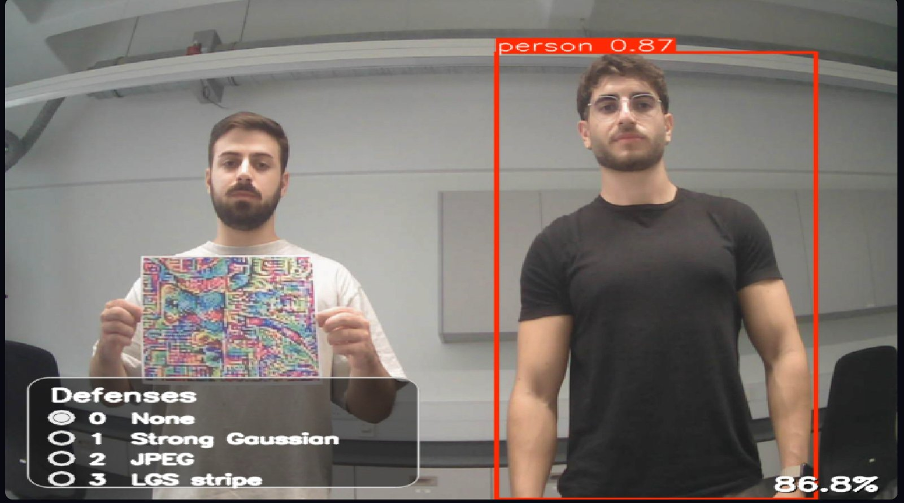
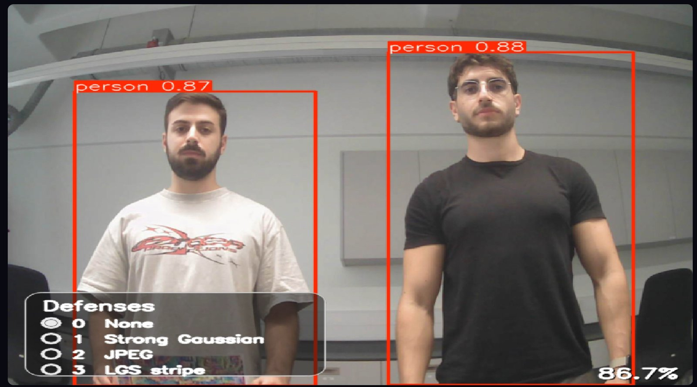

← All projects
Live demo
Adversarial person-hiding patches
I optimised printable patches that stop YOLOv8 from detecting the person holding them, and ran them as a live demonstration at European Researchers' Night 2025 with the GuardAI EU project at KIOS.
What happens in this video
- I stand in front of the camera without the patch and YOLOv8 draws a person box around me.
- I hold the printed patch in front of my chest and the person box disappears.
- When I lower the patch, the detection comes back. Raising it again hides me again.
- At the end I hold up a blank sheet of paper instead, and YOLOv8 still detects me.
Problem
Person detectors are used in safety systems, so a printed pattern that makes someone invisible to one is a real risk. For Researchers' Night 2025 I wanted visitors to see this happen live on a webcam, and to see how simple input defences change the result.
What I did
- Optimised printable patches against YOLOv8's person class using top-K suppression, with TV and L2 regularisation to keep the patch smooth enough to print.
- Tested the patches against JPEG compression, blur and Local Gradient Smoothing (LGS).
- Built the live demo, where each defence can be switched on while the camera runs.
Results


The demo video I posted on LinkedIn had 183,216 impressions (October 2026). A team at HackTX 2025 credited it as the idea behind 404 Apparel, clothing with adversarial patterns, which won the event's Best Human Intelligence award.
Media
-


Drag to compare: only the person holding the patch disappears; the other is still detected. -
Switching on Gaussian blur, JPEG compression and LGS in turn: each one brings the person detection back.